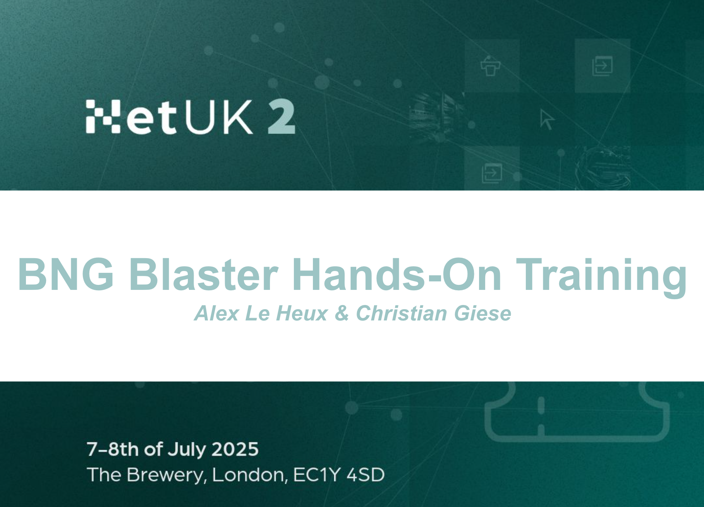

BNG Blaster Training
Welcome to our BNG Blaster Hands-On Training workshop at NetUK2 in London! Each attendee will get access to a dedicated VM setup that includes BNG Blaster, a virtual BNG powered by RBFS, a RADIUS server, and various configurations tailored for BNG and routing tests, such as ISIS, BGP, LDP, and more.
We’ll kick off with a brief introduction to the BNG Blaster and the lab environment to ensure everyone is set up for success. There’s also an interactive element to the workshop – a small challenge with hidden flags throughout the setup. Let’s see who can find all the flags first.
This workshop isn’t just focused on BNG as it demonstrates comprehensive routing tests and shows how BNG Blaster has grown into a full network testing suite.
The BNG Blaster training is splited into three sections:
Basics: The first section covers foundational concepts to ensure participants have a solid understanding of the fundamentals.
Access Protocols: The second section focuses on access protocols such as PPPoE, IPoE, and others, providing insight into how these protocols function in a BNG environment. You will learn how to emulate these protocols using BNG Blaster, including configuring the appropriate settings and generating realistic traffic patterns to simulate real-world scenarios.
Routing Protocols: The third section explores routing protocols, including BGP, ISIS, and more, helping participants understand how to test routing protocols, scaling, and convergence to evaluate network performance and stability.
For most exercises in this training, you’ll need to establish three separate SSH connections. Begin by opening three SSH sessions to your setup. Use the first session to launch the BNG Blaster, the second to interact with the BNG Blaster through its CLI, and the third to connect to the BNG CLI, which represents our device under test (DUT) running RBFS.
Throughout the exercises, commands will be provided. The initial line, marked with # >,
specifies whether commands should be entered in the host shell or within the RBFS CLI,
and also indicates the necessary mode (op or cfg).
# > Linux
# > RBFS CLI (op)
# > RBFS CLI (cfg)
Contents
Contact
Mail: bngblaster@rtbrick.com
Chat: matrix.org #bngblaster
Sources
License
BNG Blaster is licensed under the BSD 3-Clause License, which means that you are free to get and use it for commercial and non-commercial purposes as long as you fulfill its conditions.
See the LICENSE file for more details.
Copyright
Copyright © 2025, RtBrick, Inc.